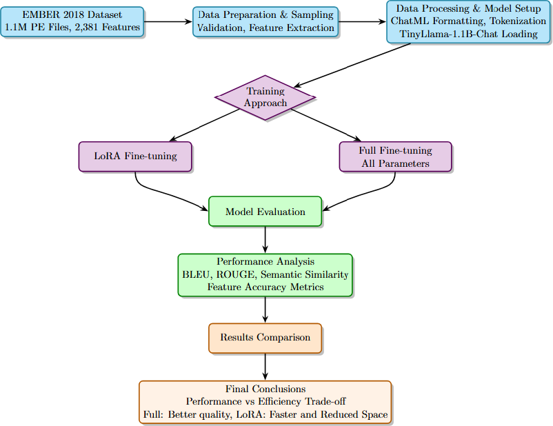
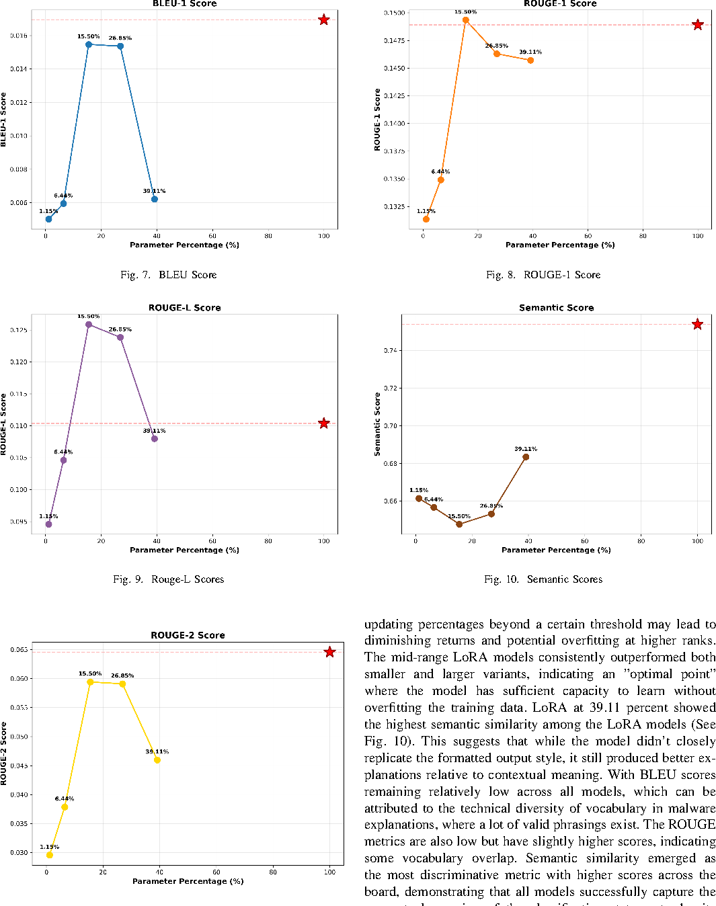
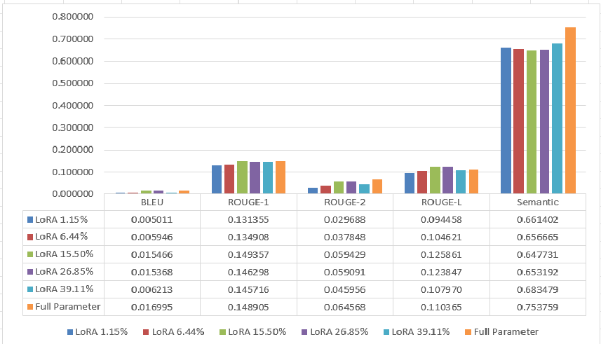
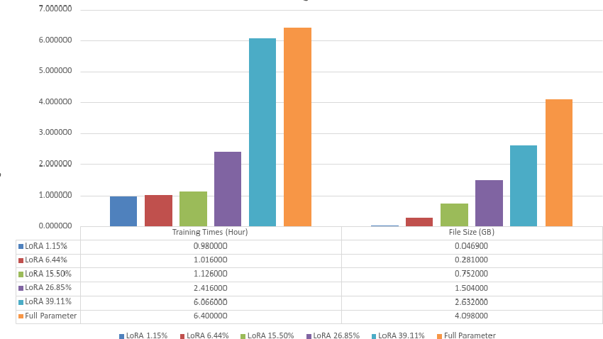

I designed and validated a malware explanation pipeline that compares parameter-efficient tuning (LoRA) against full fine-tuning for LLM-based analysis. The work covers data preparation, model comparison, explanation generation, and evaluation of performance versus resource cost.
Project Overview
EMBER + SHAP + LLM Comparison Pipeline
Contributions
Key Work Completed
- Used the EMBER 2018 dataset with a LightGBM classifier and SHAP feature analysis.
- Trained and compared multiple LoRA configurations against a full fine-tuned LLM baseline.
- Generated human-readable malware explanations from model outputs and feature-importance signals.
- Evaluated quality and efficiency trade-offs to identify practical deployment configurations.
- Packaged scripts and setup flow for reproducible experimentation in the public repository.
Technology Stack
Python
LightGBM
SHAP
LoRA
LLM Fine-Tuning
Docker
From the Paper
Figures and Results



